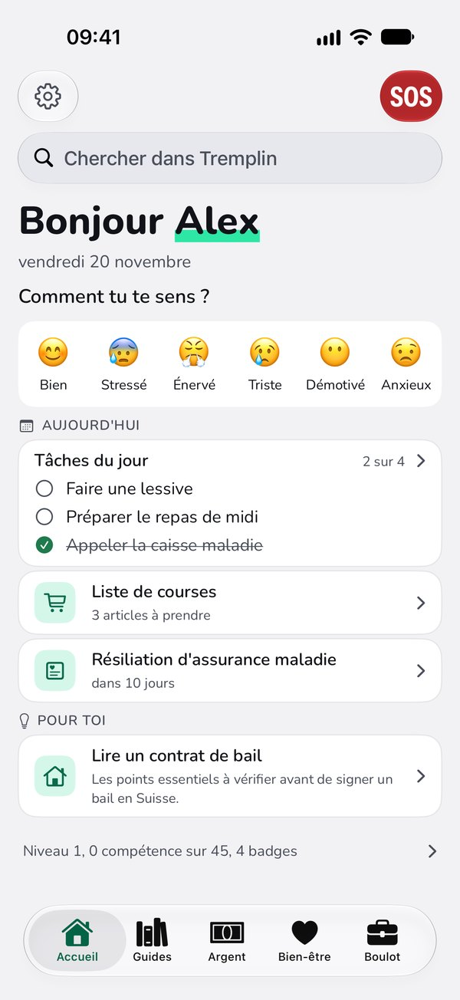
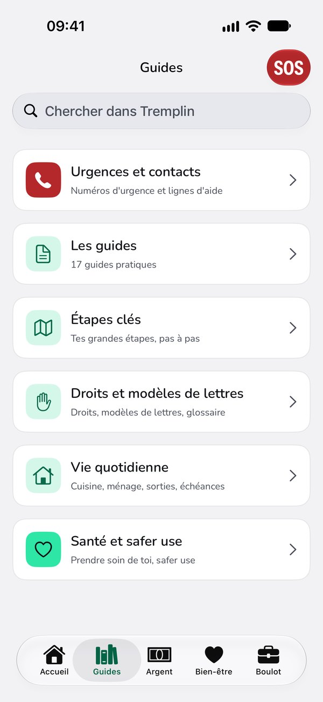
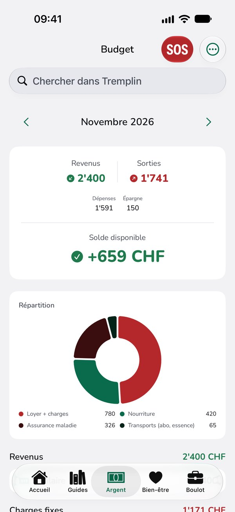
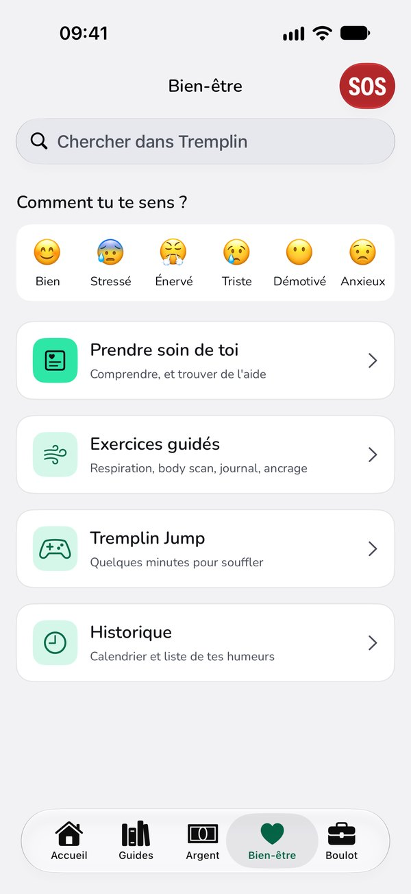
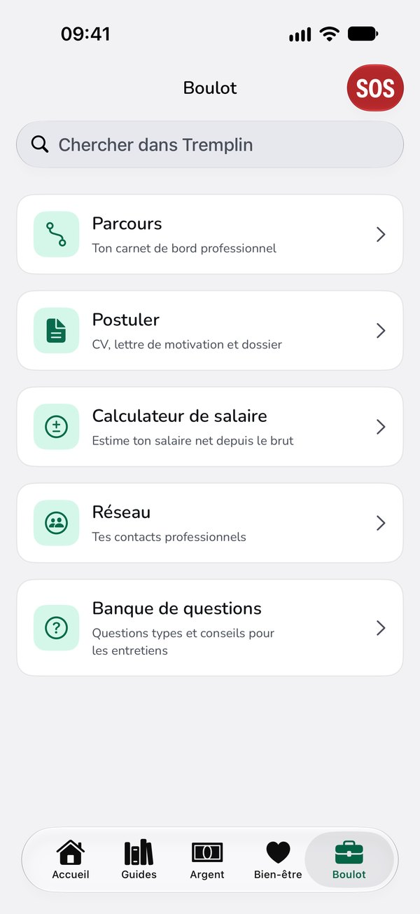
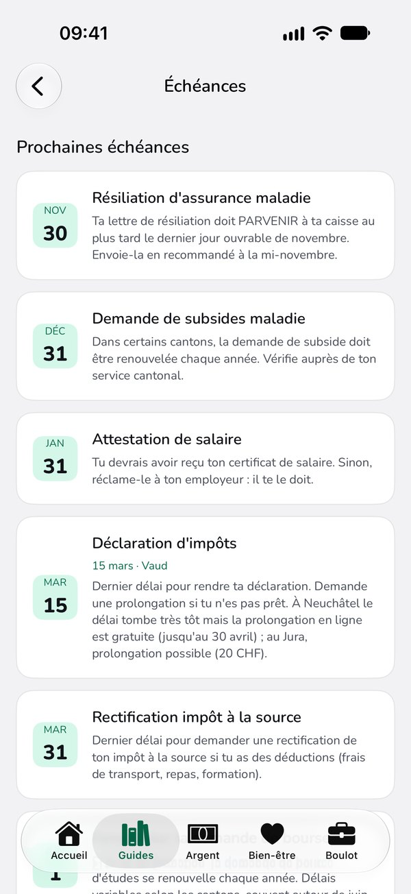
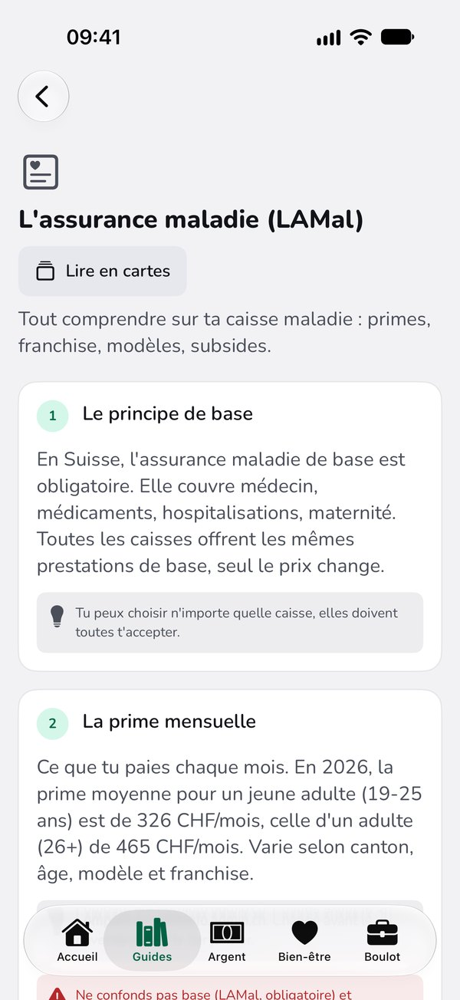
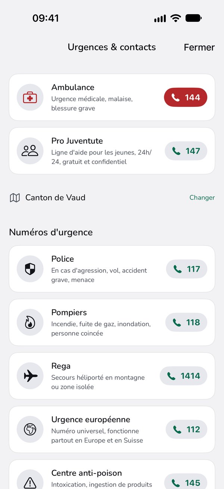

En test sur iPhone et sur Android
Tremplin
Tout ce qu'on ne t'a jamais expliqué.
- Dix-sept guides pratiques, écrits pour la Suisse romande
- Un budget, un suivi d'humeur, des outils pour chercher du travail
- Les numéros d'aide accessibles depuis n'importe quel écran
- Aucune donnée n'est envoyée automatiquement à Tremplin
Gratuite, sans publicité, sans compte. Pour les 15 à 25 ans. Elle sera disponible sur iOS et Android.

Cinq espaces pour les questions du quotidien
Ta journée, les démarches, l'argent, le moral, le travail.




Pour qui
Tremplin s'adresse aux jeunes qui commencent à gérer seuls leurs démarches, leur budget, leur santé ou leur recherche d'emploi.
Tu quittes un foyer
Le départ arrive à 18 ans, souvent avant que tout ait pu être travaillé avec toi. Tremplin permet de retrouver ces explications après le départ du foyer.
Tu vis encore chez tes parents
Les mêmes lacunes existent, sauf que personne ne les a jamais listées. On les découvre le jour où le courrier tombe dans la boîte aux lettres.
Tu accompagnes des jeunes
Un support que le jeune et le professionnel peuvent consulter ensemble, puis reprendre entre deux rendez-vous.
Des informations adaptées aux six cantons couverts
Les délais fiscaux, les services sociaux et les aides au logement varient selon le canton. Tremplin couvre actuellement Vaud, Genève, Valais, Fribourg, Neuchâtel et Jura.
Chaque information est vérifiée auprès d'une source officielle. Chaque guide affiche la date de sa dernière vérification.


Les numéros d'aide, accessibles tout de suite
Un bouton reste visible sur chaque écran. Il ouvre les numéros d'urgence et les lignes d'écoute, sans avoir à les chercher.

Dix-sept guides pratiques
Écrits pour la Suisse romande, avec les contacts de ton canton et la date de leur dernière vérification.
- Lire sa fiche de salaire
- L'assurance maladie
- Le contrat de bail
- La déclaration d'impôts
- Le contrat de travail
- S'inscrire au chômage
- Ouvrir un compte bancaire
- Chercher un logement
- Le premier salaire
- Répartir son budget
- Sortir des dettes
- Arnaques et sécurité en ligne
- La santé au quotidien
- Relations et limites
- Les transports publics
- Se déplacer
- Le permis de conduire
Tes données restent chez toi
Il n'y a ni compte, ni serveur, ni traqueur. Aucune donnée n'est envoyée automatiquement à Tremplin. Ce que tu écris est enregistré sur ton appareil, et Tremplin n'y a jamais accès.
Si tu actives la synchronisation sur iPhone, tes contenus passent par ton compte iCloud privé, auquel nous n'avons aucun accès.
guides pratiques, écrits pour la Suisse romande
cantons couverts, avec leurs délais et leurs adresses
donnée envoyée automatiquement à Tremplin
Questions fréquentes
Est-ce vraiment gratuit?
Oui. Aucun achat, aucun abonnement, aucun contenu réservé, aucune publicité. Tremplin est développée bénévolement.
Qui écrit les contenus?
Un éducateur social qui accompagne ces jeunes au quotidien. Chaque information factuelle est ensuite vérifiée à partir d'une source officielle, administrations cantonales, offices fédéraux ou organismes spécialisés, et chaque guide affiche la date de sa dernière vérification.
Les contenus les plus sensibles, santé mentale et réduction des risques, ont été relus par des organismes spécialisés de Suisse romande avant publication.
Que deviennent mes données?
Aucune donnée n'est envoyée automatiquement à Tremplin. Il n'y a pas de compte, pas de serveur, pas de traqueur, et l'application ne demande ni adresse e-mail ni numéro de téléphone. Ce que tu écris reste sur ton appareil.
Si tu actives la synchronisation sur iPhone, tes contenus passent par ton compte iCloud privé, auquel nous n'avons aucun accès. Et si tu choisis de nous envoyer un rapport technique, tu en vois le contenu avant l'envoi. Tu peux tout effacer depuis les réglages, à tout moment. Le détail complet, appareil par appareil, est sur la page confidentialité.
Faut-il une connexion internet?
Non. Les guides, le budget et les exercices fonctionnent sans Internet, puisque tout est stocké sur l'appareil. Une connexion Internet ne sert qu'à ouvrir un lien externe. Pour appeler un numéro d'aide, il faut seulement un accès au réseau téléphonique, pas de données mobiles.
Quels cantons sont couverts?
Vaud, Genève, Valais, Fribourg, Neuchâtel et Jura, avec leurs délais et leurs adresses. Le Jura bernois n'est pas encore couvert. Si tu es ailleurs, les guides restent utiles pour tout ce qui relève du droit fédéral.
Est-ce que ça remplace un professionnel?
Non, et l'application le dit clairement à ceux qui l'utilisent. Elle donne des informations générales et oriente vers les bons interlocuteurs. Pour une situation particulière, un service social, un office cantonal ou un professionnel de santé reste indispensable.
Quand pourrai-je la télécharger?
Pas encore de date. Les deux versions, iPhone et Android, sont en test avec des professionnels et des jeunes. L'ouverture publique interviendra après le test et ses corrections.
Je travaille avec des jeunes, comment participer?
En écrivant à tremplinapp@pm.me. Les structures intéressées par la phase de test sont bienvenues, et les retours de terrain sur les contenus le sont tout autant.
Testez Tremplin dans votre structure
Fondations, foyers, institutions sociales, écoles et services de la jeunesse: l'application est ouverte au test avant sa sortie publique, gratuitement et sans engagement.
Vous l'utilisez avec votre équipe, et vous nous dites ce qui cloche dans les contenus: une information dépassée, un montant qui a changé, une démarche différente dans votre canton. C'est ce qui manque le plus à un projet développé par une seule personne.
tremplinapp@pm.me · Réponse sous quelques jours.